Refonte du site hôtelier de Boxotel
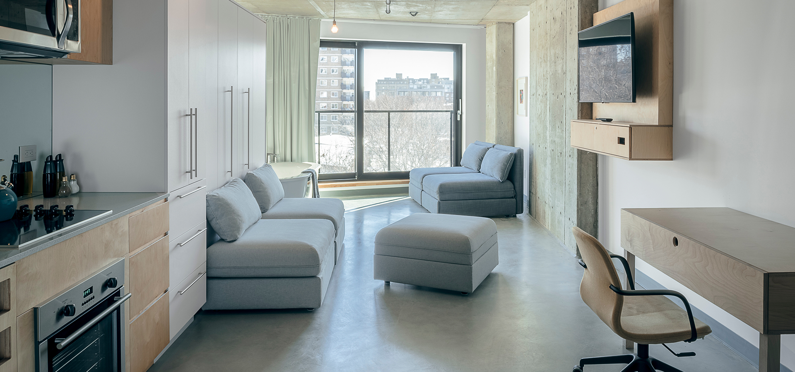
J’ai utilisé l’IA pour corriger mes textes et pour générer du contenu fictif.
Dans le cours de design d’expérience, nous devions proposer une refonte du site hôtelier de Boxotel afin de pratiquer nos compétences de designer UX et UI.
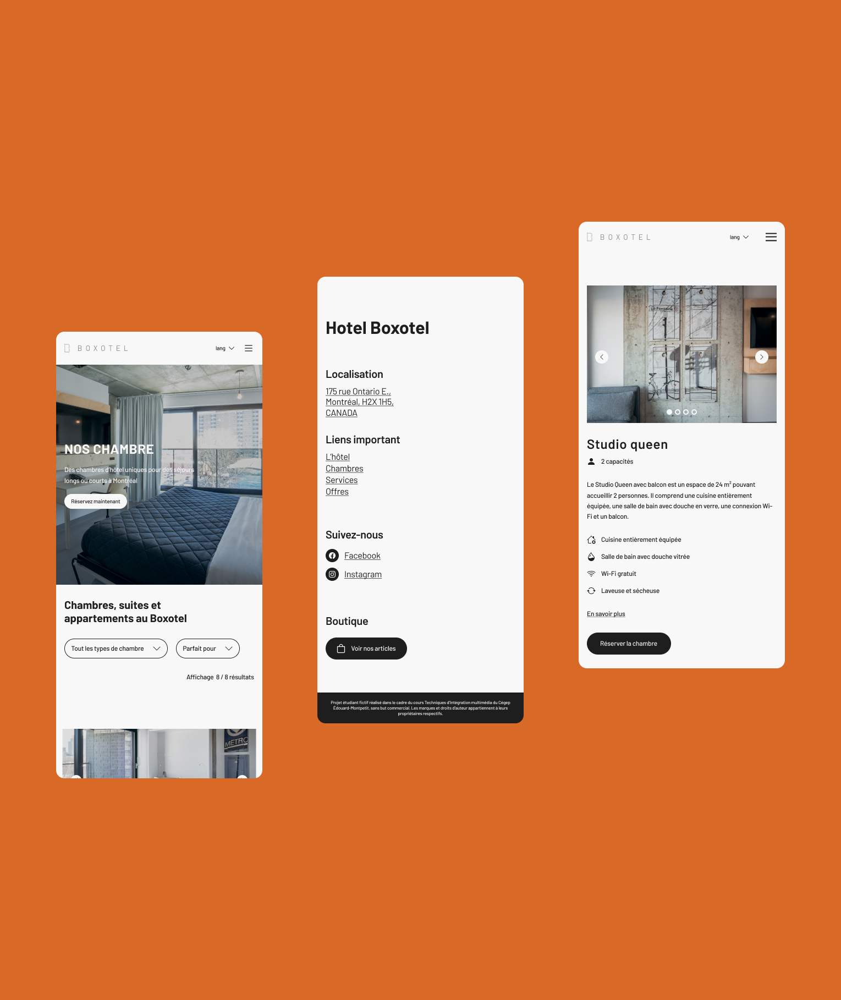
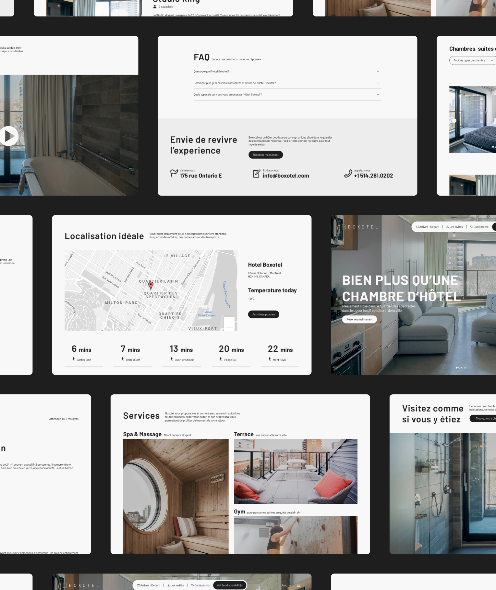
Rendre l’ancien site web de Boxotel intuitif et facilement navigable. Il devait également respecter les styles déjà établis par le client.
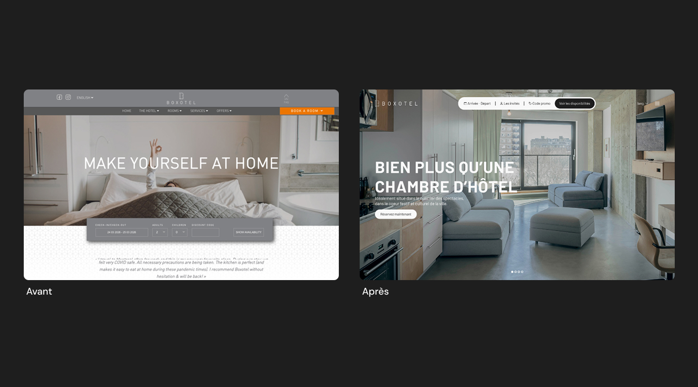
Les différents outils, logiciels et techniques utilisés pour ce projet
sortes
compétence
en gros
Personnellement, j'ai essayé d'espacer les éléments le plus possible pour faire respirer le site et rendre les images le plus full width possible.
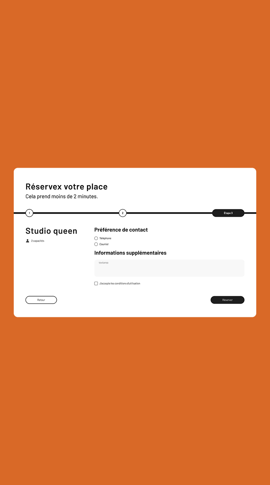
Légende
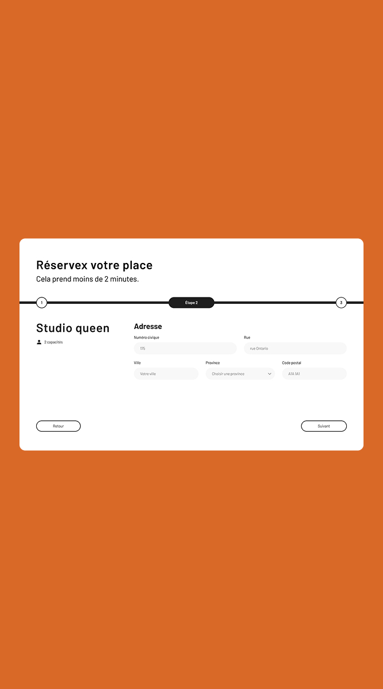
Légende
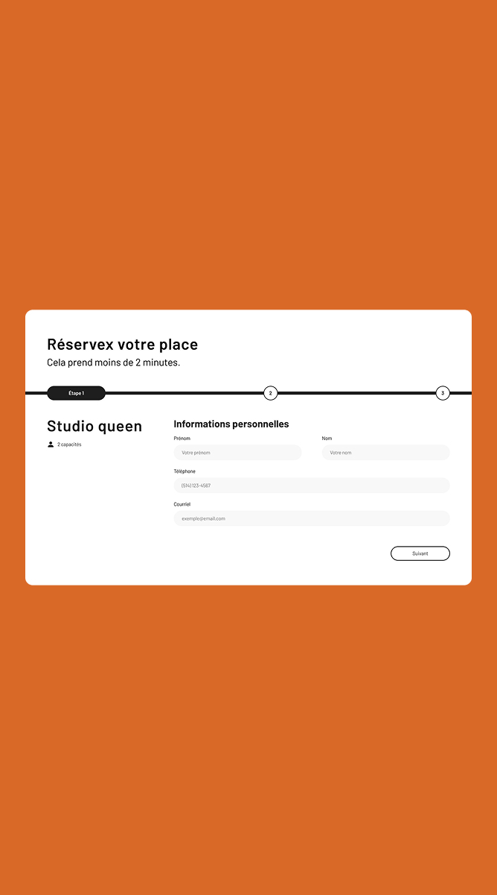
Légende
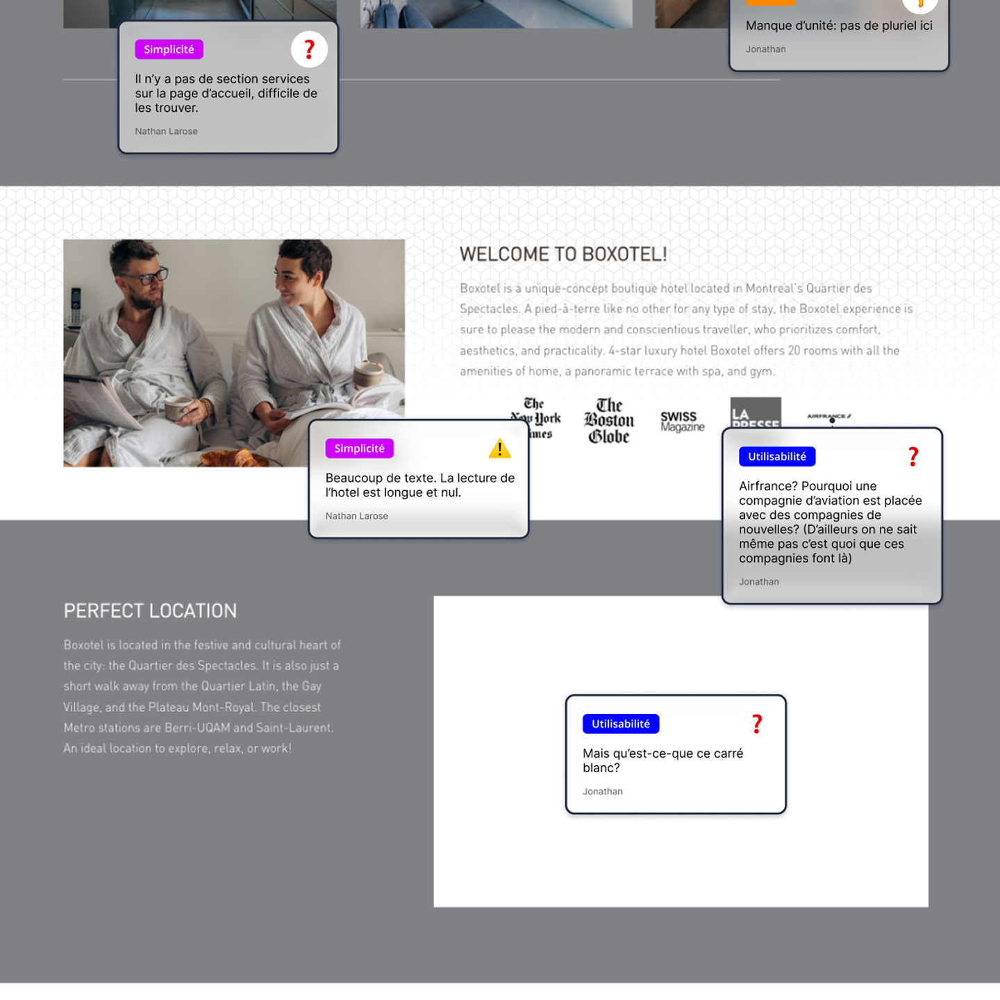
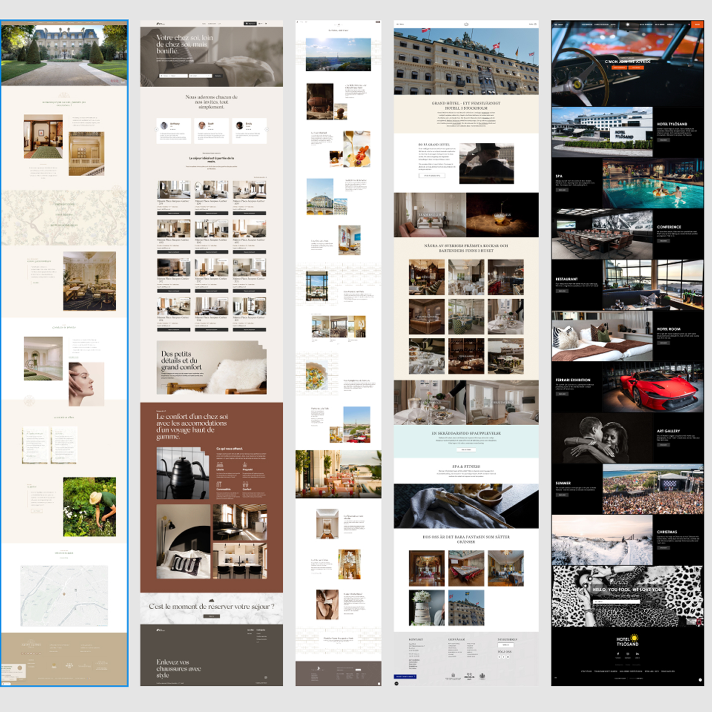
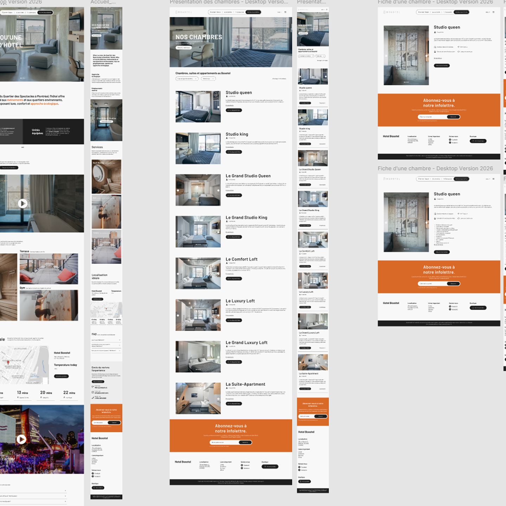
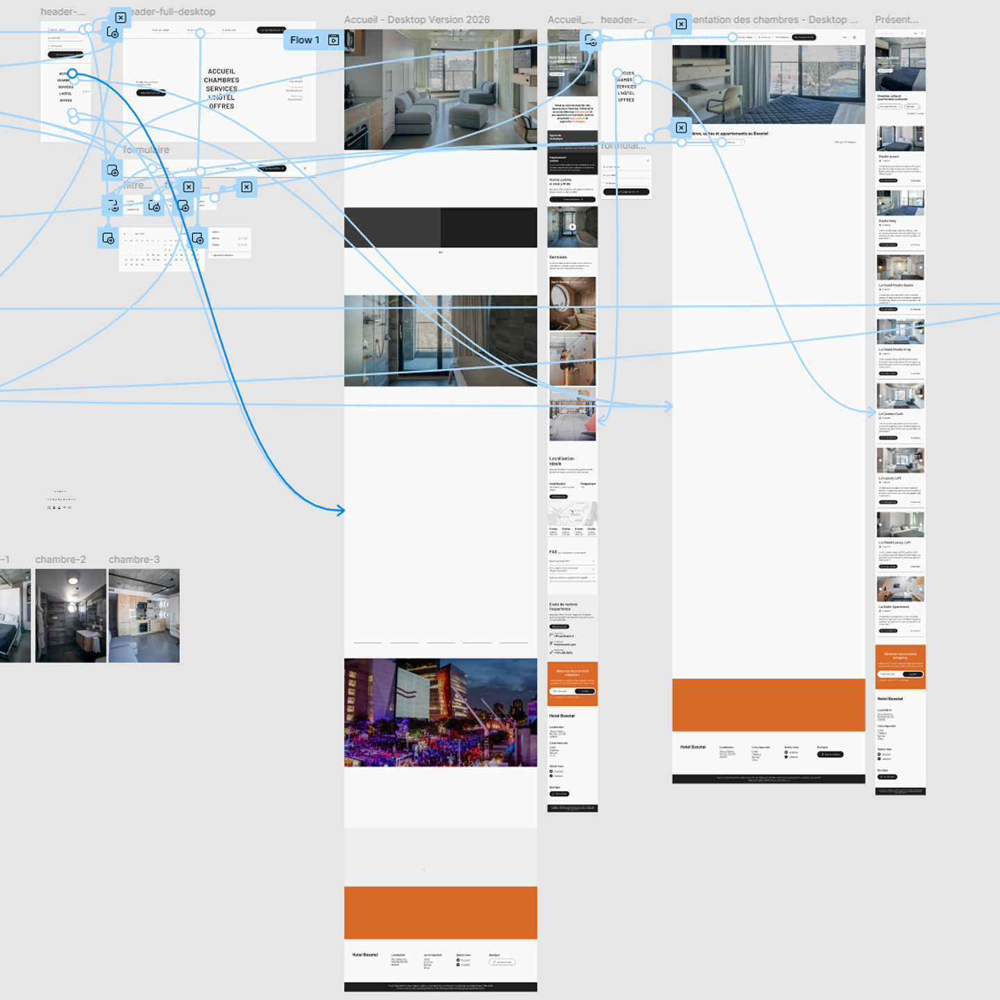
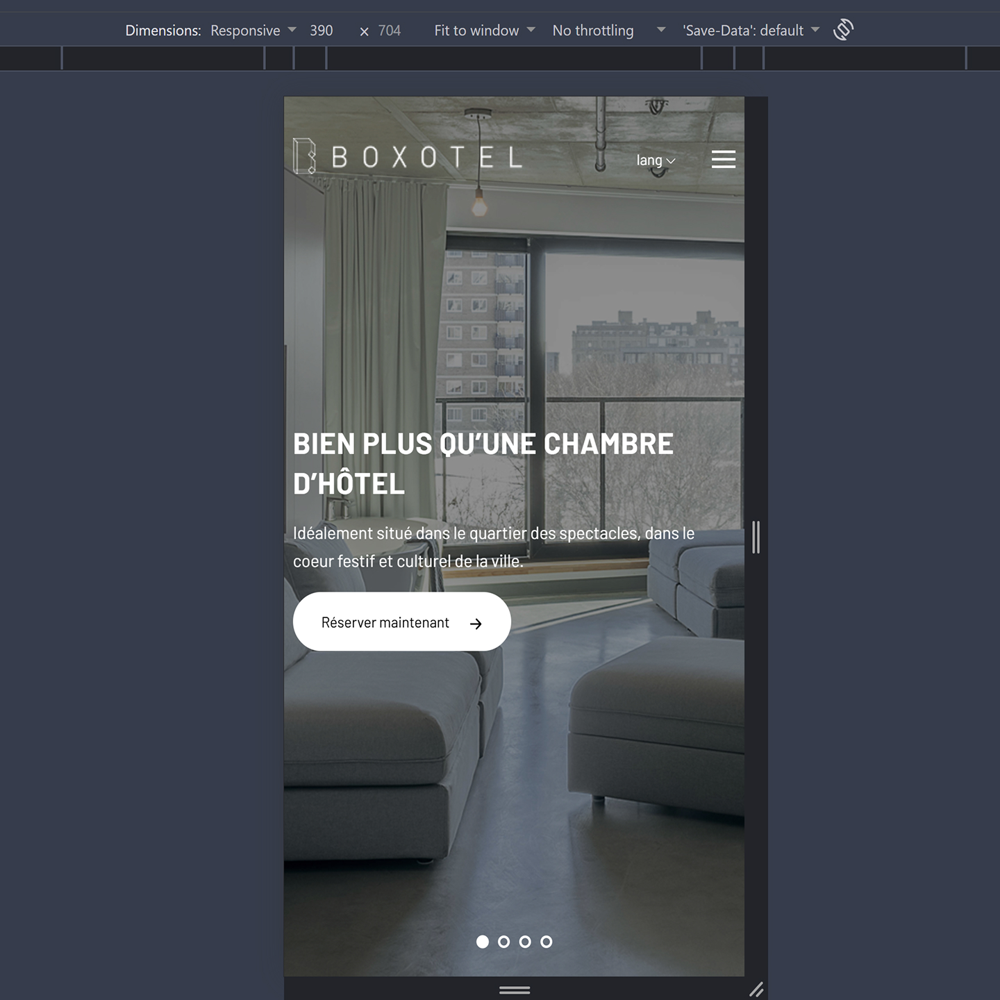
Voici les 5 étapes majeures de ce projet qui l’ont mené à sa complétion.
étape
titre
en gros
Dans ce projet, j’ai beaucoup appris. Puisque c’était ma première refonte de site web, mon projet était rempli d’expériences nouvelles et enrichissantes.
Ce projet a été réalisé dans le cadre de mon portfolio afin de créer une identité visuelle qui représente